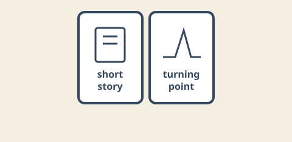

Was eine Kurzgeschichte ausmacht
Mit einem KI-Tutor lernen
Ein KI-Tutor erklärt dir diese Seite und hilft dir bei den Aufgaben. Wähl deinen Assistenten:
Mit Claude öffnen Mit ChatGPT öffnen Mit Mistral Vibe öffnen
Du nutzt dein eigenes Konto beim Anbieter. Der Assistent ist kein Angebot von lernapps.net: lernapps liefert nur Inhalte und Aufgaben. Die Wahl gilt für alle Seiten, nur auf diesem Gerät.
Der plot im Werkzeugkasten
Aufgabe
Lösung
plot richtige Antwort
Der plot sind die Ereignisse in ihrer Reihenfolge.
setting
Das setting ist Ort und Zeit der Handlung.
narrator
Der narrator ist die Stimme, die die Geschichte erzählt.
Auf dieser Seite wird die Karte plot genauer. Du suchst den Wendepunkt.
Das kannst du danach: Du nennst typische Merkmale einer Kurzgeschichte und zeigst sie an einem Text. Du belegst jedes Merkmal mit einer Zeile.
Eine Kurzgeschichte
| Englisch | Deutsch |
|---|---|
| delayed | verspätet |
| platform | Bahnsteig |
| departure board | Abfahrtstafel |
| bench | Bank |
| loudspeaker | Lautsprecher |
| crackle | knistern, rauschen |
| wrapped | eingepackt |
| per cent | Prozent |
| sigh | seufzen |
Die Zahlen in eckigen Klammern sind die Zeilennummern des Textes.
Platform Two
[1] The announcement said that the 17:42 to Leeds was delayed by twenty minutes. Nora sighed and sat down on the cold bench on platform two.
[2] She had a ticket, a heavy bag and a very bad day behind her. Her phone had nine per cent battery left, and she did not want to waste it.
[3] Next to her sat an old man with a small brown suitcase. He was holding a ticket and turning it over and over in his hands.
[4] "Excuse me," he said at last. "Is this the platform for Leeds?"
[5] "Yes," said Nora. "But the train is late."
[6] "Good," said the man. "I need the time."
[7] Nora looked at him. He did not look like a person who was afraid of missing a train. He looked like a person who was afraid of arriving.
[8] "My daughter lives in Leeds," he said. "We have not spoken for eleven years. I wrote her a letter last week, but I do not know if she has read it."
[9] Nora did not know what to say. She looked at the departure board. The twenty minutes had become thirty.
[10] "I could not call her," the man went on. "Too many words. A letter is easier. You can think before you write."
[11] "Then you have already done the hardest part," said Nora, and she was surprised by her own voice.
[12] The man smiled a little. He opened his suitcase and took out a small, flat box wrapped in blue paper. "Her birthday was in March," he said. "I have missed eleven of them."
[13] A loudspeaker crackled. The train to Leeds was arriving at platform two.
[14] The man stood up slowly. For a moment he did not move. The doors opened, people stepped out, and the platform filled with noise.
[15] "Will you sit with me?" he asked. "Just to the first station."
[16] Nora looked at her phone. Eight per cent. She looked at the open door, and at the man, and at the box in blue paper.
[17] Then she picked up her bag.
Was typisch ist und was du fragst
Eine Kurzgeschichte (short story) ist kurz und dicht. Sie konzentriert sich auf eine Situation, meist mit einer Hauptfigur. Die folgenden Merkmale sind typisch. Nicht jede Kurzgeschichte hat alle.
| Merkmal | Woran du es merkst |
|---|---|
| Einstieg mitten drin | Es gibt keine lange Vorgeschichte, die Handlung läuft schon. |
| Kurze Zeit, wenige Figuren | Es vergehen Minuten oder Stunden, eine Hauptfigur steht im Mittelpunkt. |
| Wendepunkt (turning point) | Eine Entscheidung oder ein Satz verändert die Lage. |
| Offenes Ende (open ending) | Der Text hört auf, bevor alles geklärt ist. |
- turning point
Der Wendepunkt ist die Stelle, an der sich die Lage verändert.
- open ending
Ein offenes Ende lässt eine Frage offen.

© CC-BY-4.0Zwei neue Karten für deinen Werkzeugkasten. Die Karte plot bekommt den Wendepunkt dazu.
| Karte | Leitfrage | Satzanfang |
|---|---|---|
| short story | Which typical features does the text have? | The text is a short story because … |
| turning point (Teil der Karte plot) | Where does the situation change? | The turning point is … |
Merke
Jedes Merkmal braucht einen Beleg. Du sagst nicht nur „Das Ende ist offen“, sondern nennst die Zeile und schreibst, was offen bleibt.
Ein offenes Ende ist kein Fehler. Die Autorin lässt eine Frage für die Leserinnen und Leser übrig. Sie sollen selbst weiterdenken.
Prüfe die Merkmale am Text
Aufgabe
Lösung
Nora hilft dem Mann, und alles wird gut
Das steht nicht im Text. Die Geschichte hört auf, bevor man weiß, wie es weitergeht.
Der Mann trifft seine Tochter in Leeds
Davon erfährst du nichts. Der Zug steht erst am Bahnsteig.
Nora nimmt ihre Tasche, aber was dann folgt, bleibt offen richtige Antwort
Der Text hört bei Noras Handlung auf. Ob sie einsteigt und wie die Reise endet, erzählt er nicht.
Der Zug fährt ohne die beiden ab
Davon steht nichts im Text. Der Zug steht mit offenen Türen am Bahnsteig.
Die Geschichte hat ein offenes Ende. Du musst dir den Schluss selbst denken.
Aufgabe
Lösung
Die Geschichte beginnt mitten in einer Situation richtige Antwort
Nora sitzt schon am Bahnsteig, eine Vorgeschichte gibt es nicht.
Die Handlung dauert nur kurze Zeit richtige Antwort
Es vergehen etwa dreißig Minuten am Bahnsteig.
Es gibt viele gleich wichtige Hauptfiguren
Im Mittelpunkt steht Nora. Der alte Mann kommt dazu, aber es sind zwei Figuren, und nur eine davon ist die Hauptfigur.
Am Ende sind alle Fragen beantwortet
Das Gegenteil stimmt, viele Fragen bleiben offen.
Der Text hat ein offenes Ende richtige Antwort
Der Text hört auf, bevor man weiß, was Nora tut.
Der Text hat typische Merkmale einer Kurzgeschichte, auch wenn nicht jede alle hat.
Aufgabe
Lösung
Zeile 4
Hier spricht der Mann zum ersten Mal. Noch ändert sich für Nora nichts.
Zeile 8
Hier erzählt der Mann sein Geheimnis. Entscheiden muss Nora noch nichts.
Zeile 15 richtige Antwort
Der Mann bittet Nora, mitzufahren. Ab hier muss sie sich entscheiden.
Zeile 17
Hier ist die Entscheidung schon da. Der Wendepunkt kommt vorher.
Der turning point ist die Bitte in Zeile 15.
Aufgabe
Schreibe einen Satz mit dem Satzanfang der Karte turning point und gib die Zeile als Beleg an. Was ist der Wendepunkt?
Tipp
Suche die Zeile, in der der Mann Nora um etwas bittet.
- turning point · man · ask · Nora · sit with him
Lösung
- The turning point is when the man asks Nora to sit with him (l. 15). (auch richtig: The turning point is when the man asks Nora to come with him (l. 15).; The turning point is when the man asks Nora to go with him (l. 15).; The turning point is when he asks Nora to sit with him (l. 15).; The turning point is when he asks Nora to come with him (l. 15).; The turning point is when he asks Nora to go with him (l. 15).)
Der Satz nennt die Karte, den Wendepunkt und die Zeile.
Aufgabe
Lösung
The open ending makes the reader think about what Nora does next (l. 17) richtige Antwort
Der Satz nennt die Wirkung auf die Leserinnen und Leser und gibt die Zeile an.
The open ending is a mistake because the writer forgot the end (l. 17)
Ein offenes Ende ist eine Entscheidung der Autorin. Es ist kein Fehler.
The open ending shows that the man meets his daughter (l. 17)
Das steht nirgends. Das offene Ende erzählt nicht, was danach geschieht.
The open ending shows that Nora has a phone (l. 16)
Das Telefon kommt im Text vor, hat aber mit dem Ende nichts zu tun.
Das offene Ende lässt die Leserinnen und Leser weiterdenken.
Aufgabe
Höre den Satz und schreibe ihn auf.
- KI
- KI
- KI
Lösung
- A short story often starts in the middle of a situation.
- The reader has to imagine the ending.
- A short story can be read in a few minutes.
Die Sätze nennen Merkmale einer Kurzgeschichte in neuen Worten.
Begründe: Ist das eine Kurzgeschichte?
Offene Aufgabe
Zeige an drei Merkmalen, dass der Text vom Bahnsteig eine Kurzgeschichte ist. Schreibe drei englische Sätze mit je einer Zeile als Beleg.
Eine gute Antwort enthält:
Lösung
The text is a short story because it starts in the middle of a situation, with Nora already on the platform (l. 1). The turning point is when the man asks Nora to sit with him (l. 15). The ending is open, because we do not learn whether Nora gets on the train (l. 17).
Die App bewertet deinen Text nicht. Prüfe ihn selbst an den Punkten.
Aufgabe
Höre dir jeden Satz an, sprich ihn nach und nimm dich auf. Höre dich dann an und bewerte deine Aussprache selbst.
- The turning point changes everything.KI
- Nothing is explained at the beginning.KI
- The writer leaves a question for the reader.KI
Zum Aufnehmen braucht diese Aufgabe JavaScript. Die Beispiele kannst du auch ohne anhören.
Lösung
- The turning point changes everything.
- Nothing is explained at the beginning.
- The writer leaves a question for the reader.
Dein zweiter Listeneintrag
Setze die Geschichte vom Bahnsteig auf die Lese- und Sehliste für Year 10: Ein Satz mit dem Satzanfang „The text is a short story because …“ und einer Zeile ist dein Eintrag. Auf der nächsten Seite fragst du, wer die Geschichte erzählt, und erweiterst die Karte narrator.
Fehler gefunden oder eine Idee für diese App?